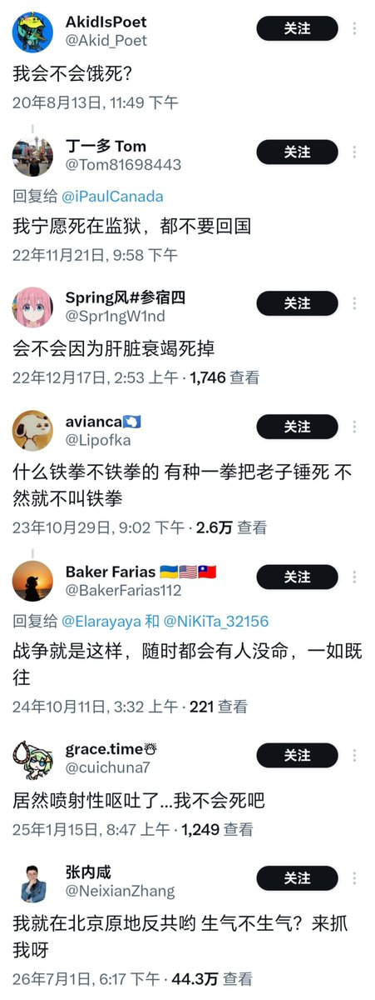

大狐帝国史官邹智萱（笔名段歌文）
@Rococo90933671
@fanzeiwocaonima 我河山硕不配拥有姓名吗？

河山硕
@heshanshuo
【真谛】信文贵得永生，喜马拉雅邪教助你超脱三界。噢耶！噢耶！噢耶！ https://t.co/3Ky47lBIGC
胜利主义三叶同志☘️
@fanzeiwocaonima
https://t.co/UtS405EHCg https://t.co/XtGbHVGeI1